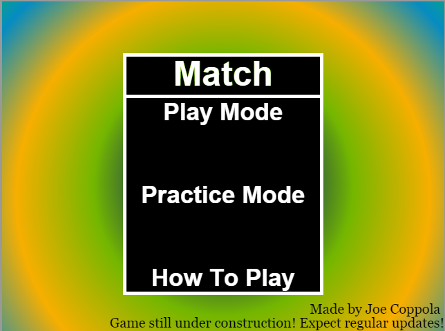
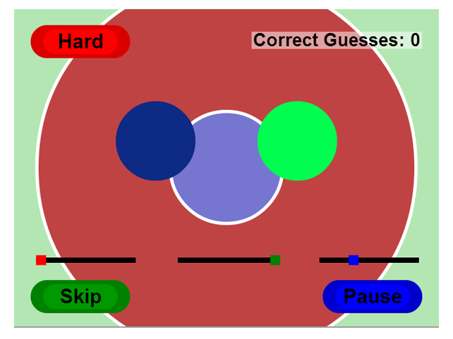
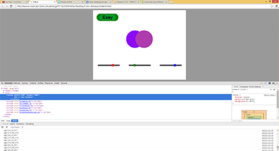
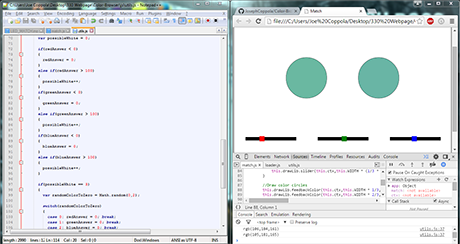

Even though this project is no longer required to be worked on, I have grown attached to this game. I over scoped the game a lot, and didn't get close to my original concept. However, I am still pleased with the game and am excited to see what I can continue to do with this game. So I shall continue development this semester. Who knows, I may submit this prototype to Magic's "Co-Up" program in hopes of continuing development into a coop!
Match, originally Color Browser, is a digital adaptation of a game that I made for my physical computing and alternative interfaces class. The objective of the game was to match the RGB values of one color. The arduino version just keeps generating random colors and goes forever. This adaptation would have a lot more features, and will be playable with friends. The game falls within the casual puzzle genre. The game is currently under development for computer browsers and will be optimized for mobile devices with touch controls. The game was originally planned to have a random mode where the player will be able to just constantly guess colors, in spirit of the original game. That has been since changed to practice mode, the first fully finished mode of Match. The play mode is a mode that is nearly finished at the moment. A list of levels is loaded in play mode and the player can see how many levels they can beat. Currently there are only two levels. However with the way it is set up to load levels in, new levels can be generated quickly. Additional modes would be VS modes where friends can make colors up for the player to guess, and a speed mode where the player can see how many guesses they can get before time is up. This game will have limited images used, and will be a majority of canvas drawing.

The game revolves around RGB color codes and know what colors make what. In each planned mode, the player will have to in some way use the sliders to adjust each color code accordingly. Depending on mode and difficulty, the leeway given for each RGB value will be different. For example, easy mode in practice will allow for much more of a difference in the RGB values and the player's guesses as opposed to the harder difficulty which won't let for as much leeway. Easy mode will also allow the player to match colors on top of each other as opposed to matching them with space in between, which isn't as easy as one would think. This game is UI heavy, meaning a lot of the gameplay is going to rely on the UI to give the feedback necessary to the player. The game background also plays into the game. In practice hard mode and play mode, the background provides valuable feedback to the player. In practice easy mode, the background doesn't even draw until you have it right!

As stated before, the game is going to be a heavy UI game, in hopes of eventually porting it over to mobile as a casual game. Also hoping of being a UI/UX guy one day, I decided to build all my sliders and buttons from scratch, so that I can have a better idea of implementation of UI. Now that the button and slider has been created, I can focus on game modes. These elements are crucial to the rest of the game, and that is why I ended up tackling them first. The game will also display scores on certain screens. Pause and Main menus will dictate what the player can do and go. These menus will be the next focus of development.
